Amway Korea — Mobile Service GUI
GUT Morning
매일 아침 장 건강 습관을 팀과 함께 인증하는 암웨이의 챌린지 서비스.
‘오늘의 인증’ 한 번의 탭에서 시작해 팀 랭킹, 자녀 계정까지 이어지는 모바일 화면 전체의 GUI를 설계했습니다.
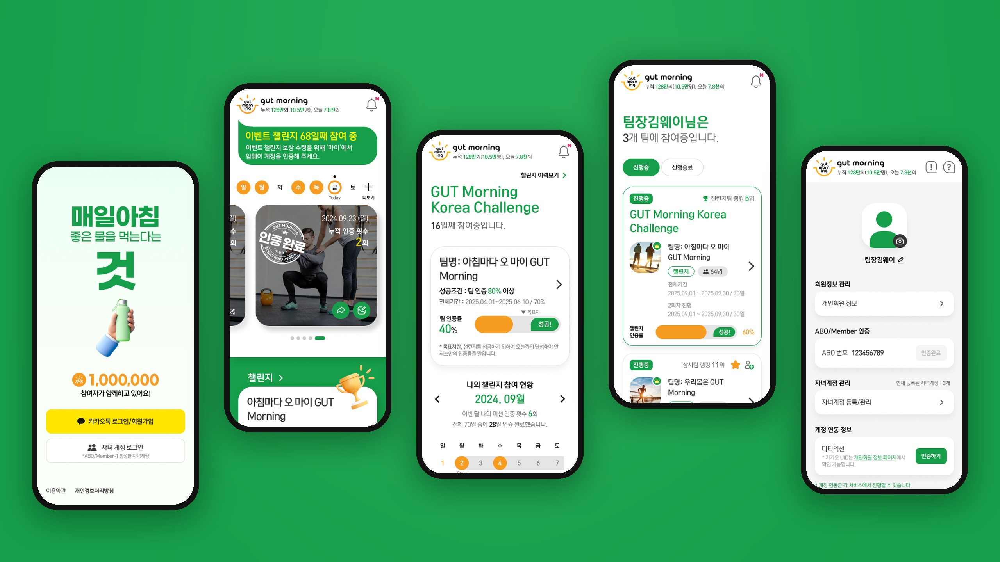
01 — Overview
건강 습관은 정보가 아니라 매일의 작은 성취로 만들어진다. 그래서 모든 화면을 ‘오늘 인증했는가’ 하나의 질문을 중심으로 설계했습니다.
Service
참여자는 매일 아침 미션을 사진으로 인증하고, 팀의 인증률이 목표치에 도달하면 챌린지에 성공합니다. 챌린지 팀과 상시 팀, 부모가 관리하는 자녀 계정까지 사용자 유형이 다양한 서비스입니다.
My Part
인트로·로그인부터 홈, 챌린지, 나의 팀, 마이, 예외 화면까지 7개 섹션 113개 화면의 GUI를 디자인하고, 버튼·칩·진행 바·캘린더 같은 반복 요소를 컴포넌트로 정리했습니다.
02 — Screen Map
7개 섹션, 113개의 화면.
-
인트로 · 로그인25
-
홈20
-
챌린지11
-
나의 팀22
-
마이27
-
Footer2
-
ETC6
03 — Intro
한 글자로 이어지는
‘것’모닝.
서비스 이름의 ‘것(GUT)’을 인트로의 주인공으로 삼았습니다. 좋은 물, 유산균, 단백질을 먹는다는 ‘것’이 차례로 바뀌다가 마지막에 “것모닝 하세요”로 닫히는 4장의 인트로. 3D 오브젝트와 굵은 한글 타이포를 같은 위치에 고정해, 넘겨도 리듬이 흔들리지 않게 했습니다.
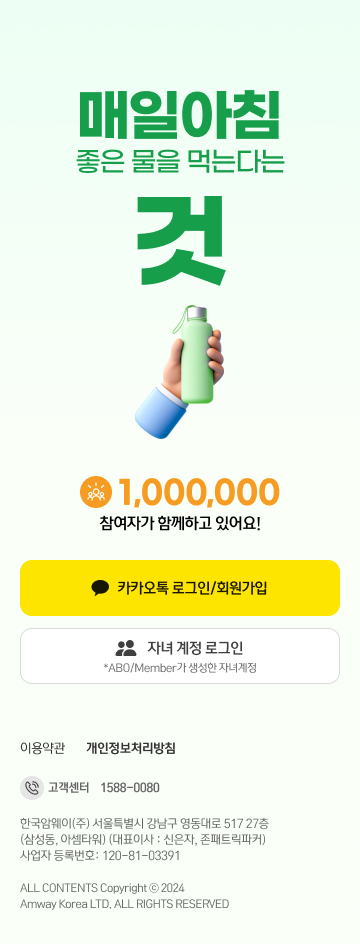
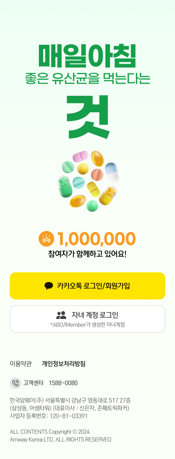
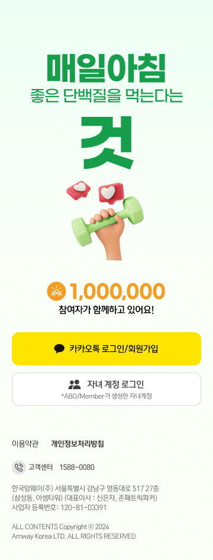
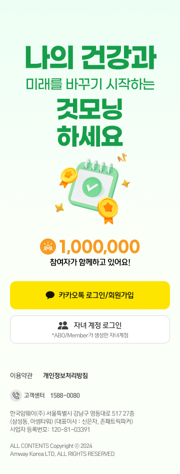
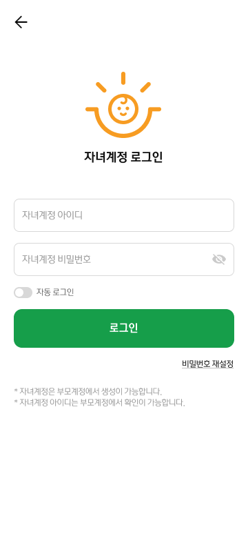
04 — Home
하루의 시작은
버튼 하나로.
홈 첫 화면에는 오늘 날짜와 점선 카드의 ‘오늘의 인증하기’만 남겼습니다. 인증 전에는 비어 있는 점선 카드가, 인증 후에는 사진과 ‘인증 완료’ 스탬프가 같은 자리를 채우며 상태 변화를 한눈에 보여 줍니다. 요일 스탬프와 팀 인증률 바는 그 아래에서 진행 상황을 이어 받습니다.
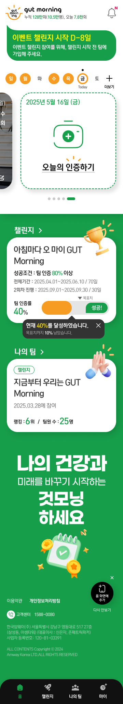
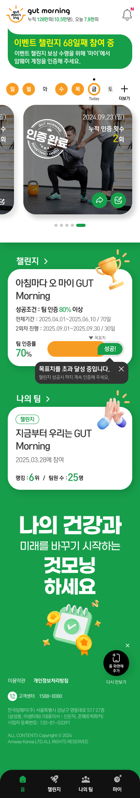
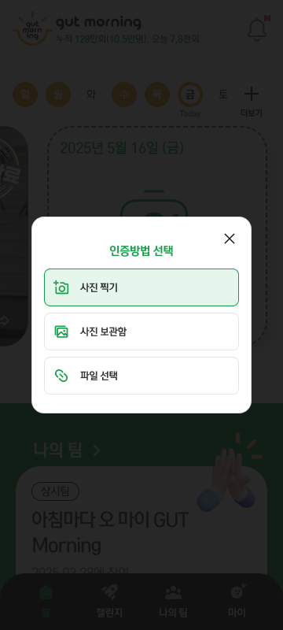
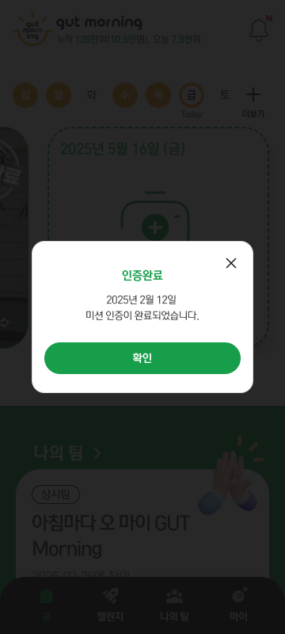
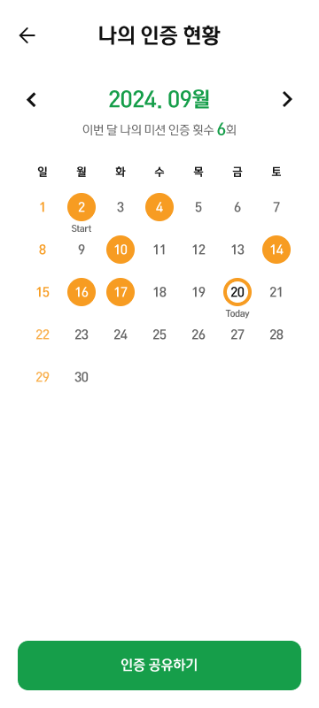
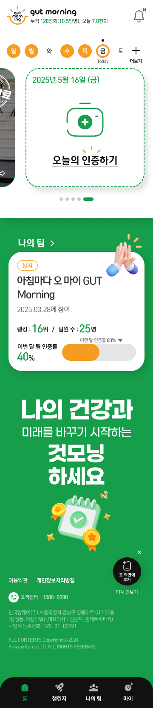
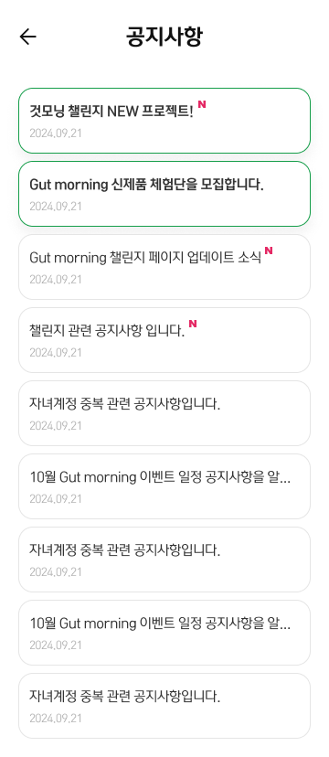
05 — Challenge
목표까지 남은 거리를
눈으로 보이게.
팀 인증률은 오렌지 바, 성공 기준은 바 끝의 ‘목표치’ 표시와 초록 ‘성공!’ 배지로 나눴습니다. 숫자를 읽지 않아도 얼마나 남았는지 보이도록요. 아래의 참여 캘린더는 인증한 날을 오렌지 원으로, 오늘을 링으로 표시해 홈의 요일 스탬프와 같은 언어로 이어집니다.
- A회차가 여러 번이면 ‘1차 미션 성공’ 배너를 위에 쌓아 진행 단계를 구분
- B인증 카드는 그대로 공유 이미지가 되도록 스탬프·횟수를 카드 안에 배치
- C지난 챌린지는 나의·팀 인증률과 결과 배지(성공·실패)로 요약
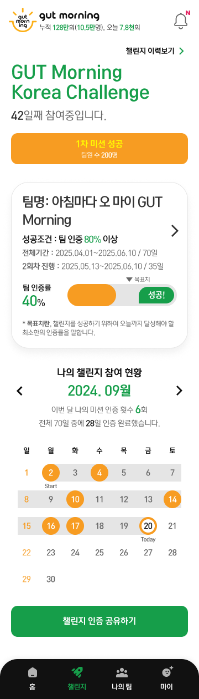
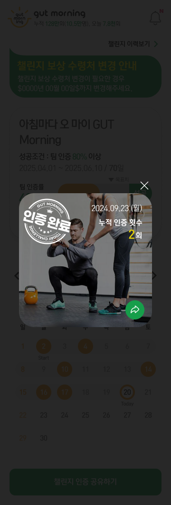
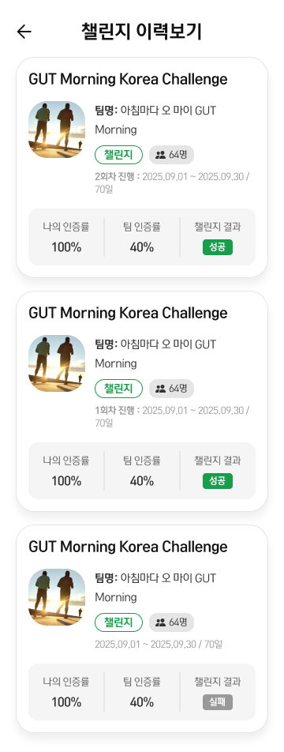
06 — My Team
혼자가 아니라
팀으로 이어지게.
팀 카드는 상태(진행중·진행대기·진행종료), 팀 구분(챌린지·상시), 인원, 인증률을 같은 순서로 쌓은 하나의 템플릿입니다. 랭킹에서는 내 팀을 화면 아래에 고정해 순위가 멀어져도 놓치지 않게 했고, 팀 정보에는 팀원 인증률 순위를 막대 그래프로 넣어 서로를 응원하는 동기를 만들었습니다.
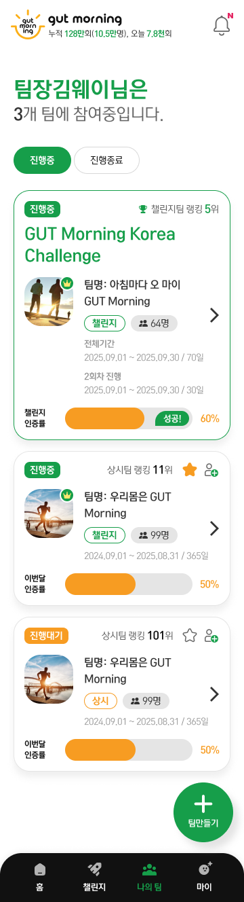
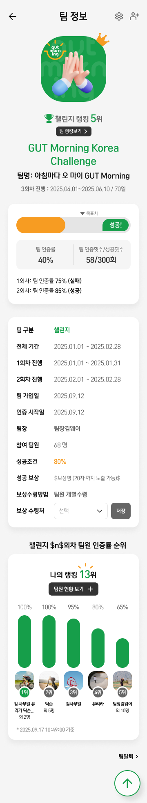
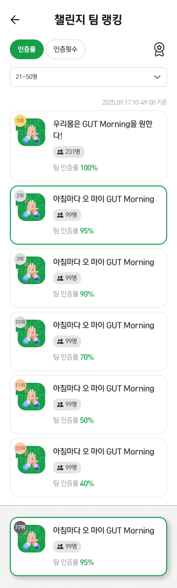
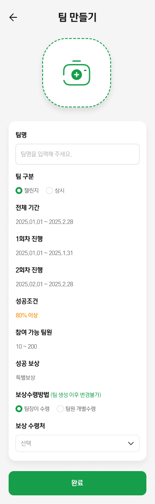
07 — My & Family
부모가 만들고,
아이가 참여하는 계정.
만 14세 미만 자녀는 부모 계정 인증을 거쳐야 하는 가장 복잡한 흐름이었습니다. 자녀 계정마다 컬러 아바타를 주어 여러 명을 한 화면에서도 구분하게 했고, ‘미완료 계정’과 ‘탈퇴 진행 중’은 회색 아바타와 핑크 라벨로 정상 계정과 분리했습니다. 입력 오류는 같은 핑크 톤 하나로 통일했습니다.
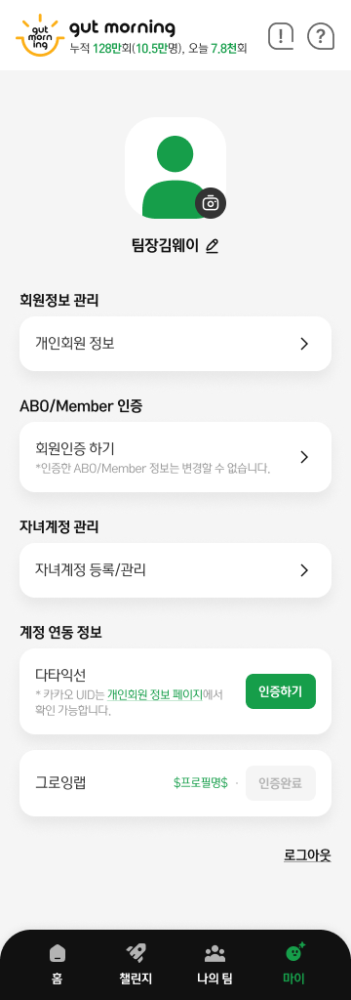
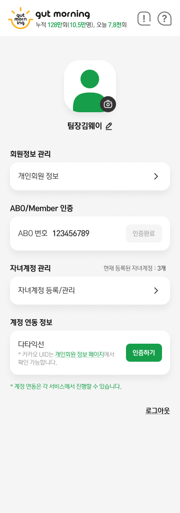
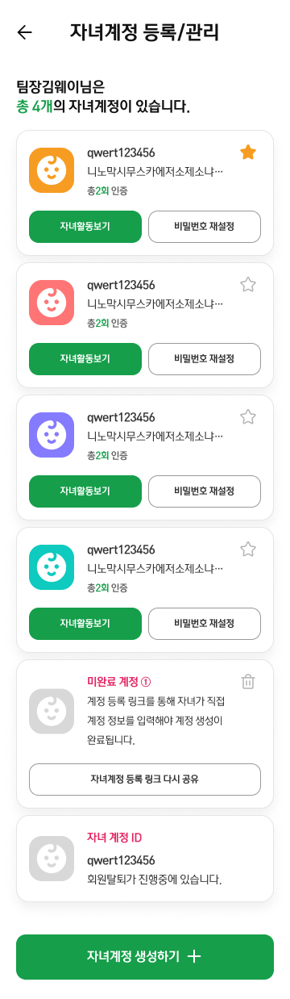
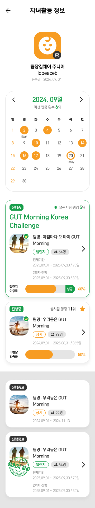
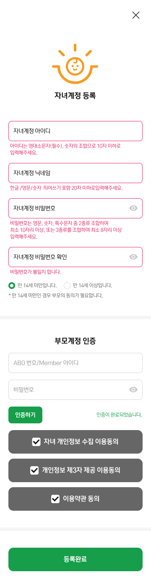
08 — Design System
113개 화면을 묶는
작은 규칙들.
360 × 800 기준, 좌우 20px 여백과 320px 콘텐츠 폭. 초록은 행동과 성공, 오렌지는 진행과 기록, 핑크는 오류에만 쓰도록 역할을 나눴습니다. 아래 요소는 실제 화면의 컴포넌트를 코드로 다시 그린 것입니다.
Color
- Primary Green#169E4ACTA · 성공 · 선택
- Progress Orange#F79C22인증률 · 스탬프
- Kakao Yellow#FDE500소셜 로그인
- Alert Pink#E42864오류 · 알림
- Ink#111111텍스트 · 탭바
- Surface#F5F5F5배경 · 정보 박스
Typography — Pretendard
- Display
매일아침 것
- Title
GUT Morning Korea Challenge
- Heading
챌린지 팀 랭킹
- Body
팀명: 아침마다 오 마이 GUT Morning
- Caption
2025.09.17 10:49:00 기준
Button · Input
비밀번호가 불일치 합니다.
Badge · Progress · Stamp
- 일
- 월
- 화
- 수
- 목
- 금Today
- 토
Layout
- 360 × 800Base frame
- 20 / 320Margin / Content
- 24 · 12 · 8Card · Button · Chip radius
- 4Tab bar items
09 — States
잘 안 될 때의 화면도
같은 목소리로.
시스템 점검, 로딩, 500·404 에러에도 3D 일러스트와 초록 헤드라인, 하단 고정 버튼이라는 같은 구조를 썼습니다. 팝업은 제목·본문·버튼 위치를 하나의 템플릿으로 고정해 약관 동의부터 팀 가입 완료까지 재사용했습니다.
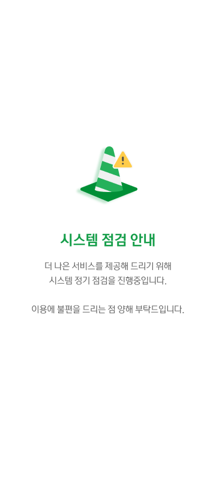
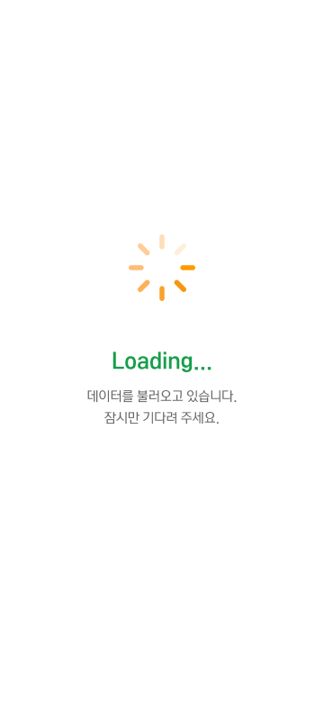
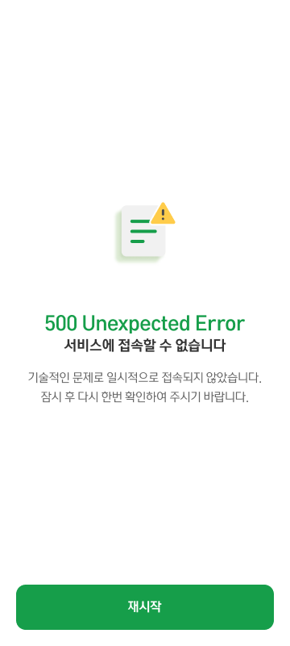
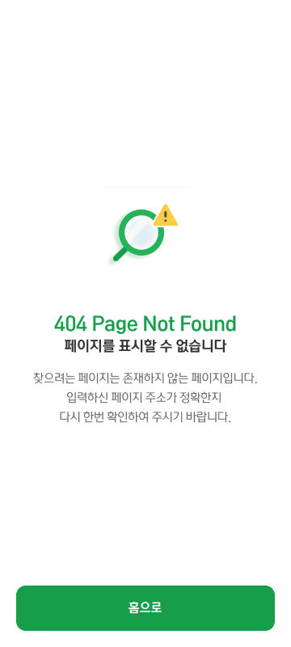
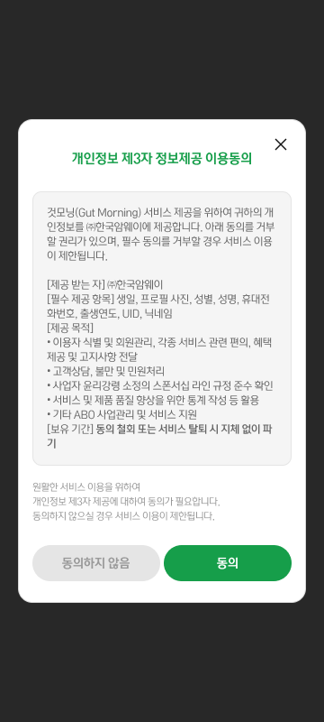
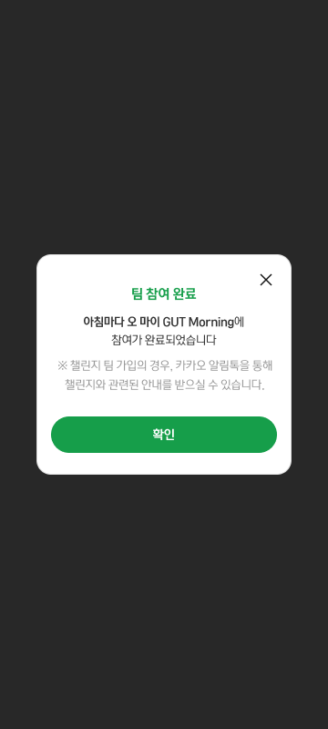
10 — Guide
처음 온 사람도
세 단계면 충분하게.
인증 방법 안내는 실제 화면을 축소해 넣고, 눌러야 할 곳에 손가락 커서를 얹어 설명했습니다. 모바일 웹과 PC 웹의 업로드 차이, iPhone Safari의 이미지 저장 방법처럼 문의가 많을 부분은 별도 블록으로 분리했습니다.
- 01오늘의 인증하기 버튼 선택
- 02사진 촬영 · 보관함 · 파일 선택
- 03인증 내역 확인 및 공유
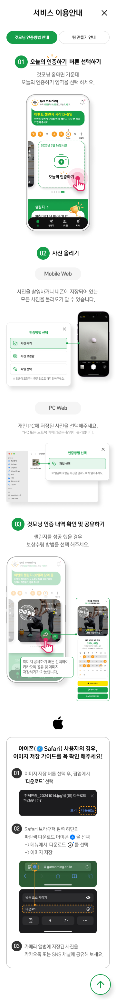
11 — Outcome
-
113
Screens
7개 섹션의 기본 화면과 상태 변형을 하나의 360 기준 그리드 위에서 완성했습니다.
-
3colors
Clear Roles
초록·오렌지·핑크에 각각 하나의 역할만 주어, 색만 보고도 행동·진행·오류를 구분하도록 했습니다.
-
1template
Reusable Cards
팀·챌린지·자녀 활동이 같은 카드 템플릿을 공유해, 새 화면도 조합만으로 만들 수 있게 정리했습니다.